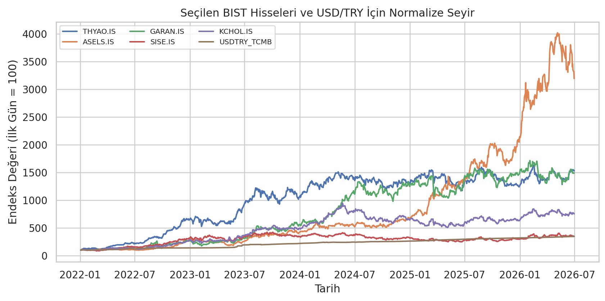
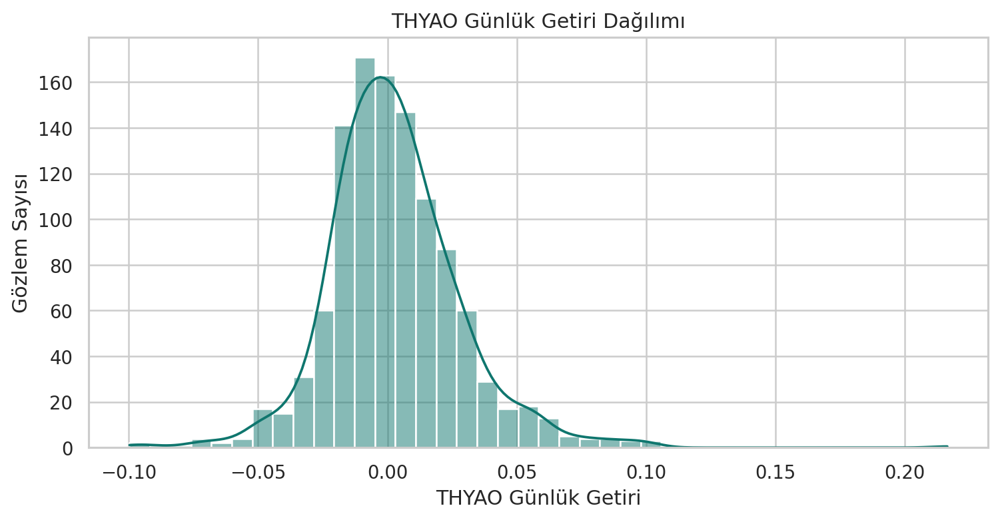
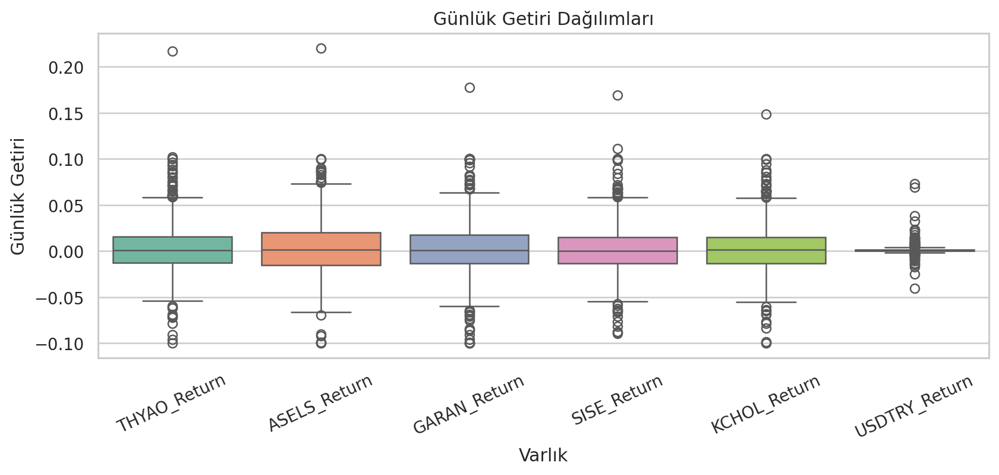
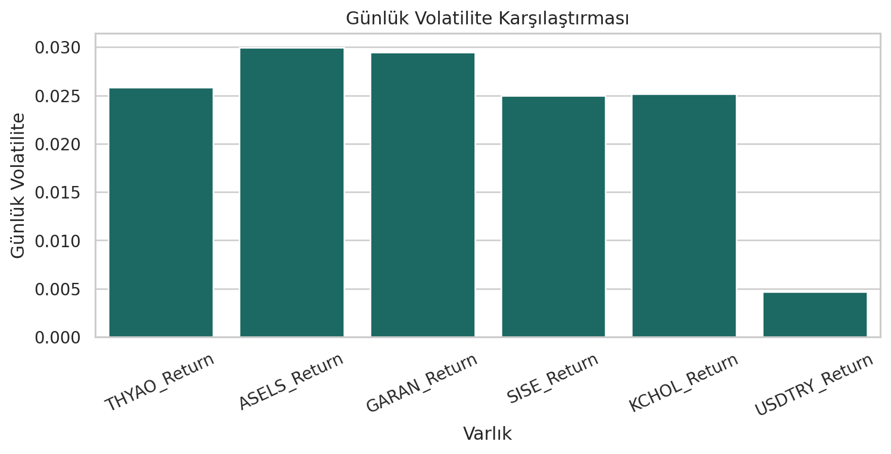
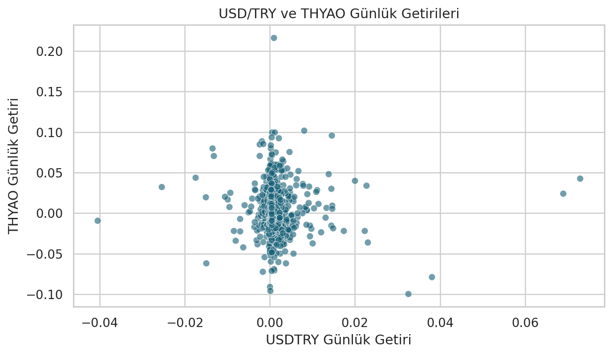
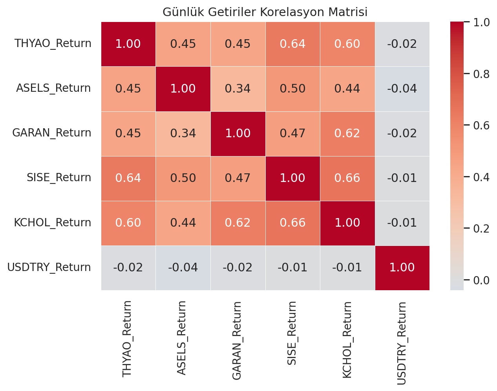
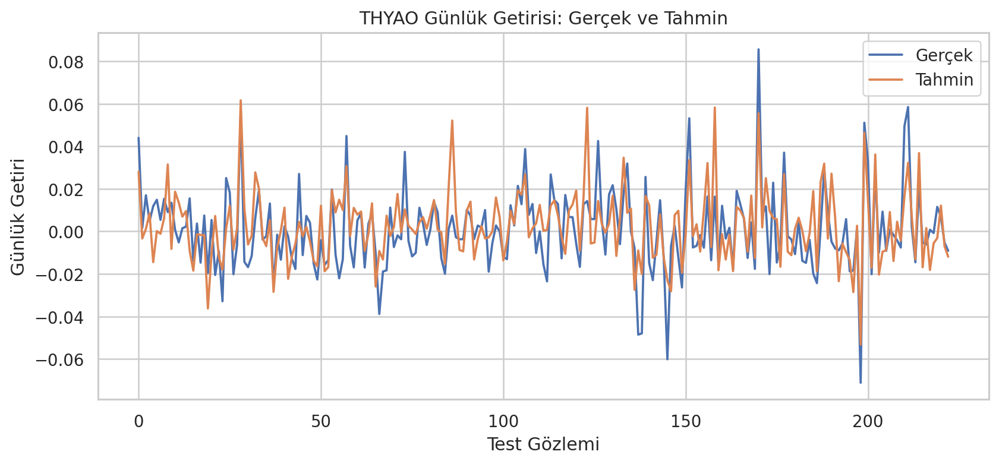

BIST Hisseleri ve TCMB Döviz Kuru Verileriyle Risk-Getiri Analizi
Veri Bilimi Dönem Projesi — Kısa Rapor
Hazırlayan: Ömer KANDUROL (1306240077)
1. Problem Tanımı
Bu proje, seçilmiş BIST hisseleri ile TCMB USD/TRY döviz kuru verilerini kullanarak finans ve ekonomi temasında temel bir veri bilimi iş akışı uygular. Çalışma; günlük getiriler, volatilite/risk, korelasyonlar, araştırma soruları ve basit bir regresyon modeli üzerine odaklanır.
Temel amaç yatırım tahmini yapmak değil, gerçek finansal zaman serileri üzerinde veri yükleme, temizleme, analiz, görselleştirme ve modelleme adımlarını eğitim amaçlı olarak göstermektir. Bu nedenle çalışma yatırım tavsiyesi değildir.
Araştırma soruları; seçilen BIST hisselerinin günlük getiri dağılımlarını, hangi hissenin daha yüksek volatilite gösterdiğini, TCMB USD/TRY getirisi ile hisse getirileri arasında güçlü bir ilişki olup olmadığını ve seçilen hisselerin birlikte hareket etme eğilimini incelemektedir.
2. Kullanılan Veri Seti ve Kaynağı
BIST hisse fiyat verileri Yahoo Finance üzerinden yfinance ile alınmıştır. TCMB USD/TRY verisi TCMB günlük döviz kuru verilerinden elde edilmiş, usdtry_forex_buying değişkeni kullanılmış ve analizde USDTRY_TCMB olarak adlandırılmıştır.
Seçilen BIST hisseleri THYAO.IS, ASELS.IS, GARAN.IS, SISE.IS ve KCHOL.IS şeklindedir. Planlanan tarih aralığı 2022-01-01 ile 2026-06-30 arasındadır. Ortak veri seti, işlem günü ve takvim farkları nedeniyle ilk ortak iş gününden başlamaktadır.
Veriler yalnızca eğitim amacıyla kullanılmıştır; finansal veri kullanımı ilgili veri sağlayıcılarının kullanım koşullarına tabidir.
| Veri dosyası | Satır sayısı | Sütun sayısı | Açıklama |
|---|---|---|---|
| data/raw/bist_close_prices_raw.csv | 1125 | 6 | Yahoo Finance üzerinden indirilen ham BIST kapanış fiyatları |
| data/raw/tcmb_usdtry.csv | 1117 | 6 | TCMB günlük USD/TRY döviz kuru ham verisi |
| data/processed/clean_price_data.csv | 1113 | 7 | Ortak tarihlerde birleştirilmiş temiz fiyat verisi |
| data/processed/daily_return_data.csv | 1112 | 7 | Günlük yüzde getirilerden oluşan işlenmiş veri |
Tablo 1. Projede kullanılan ham ve işlenmiş veri dosyalarının özeti.

3. Yöntem
3.1 Veri Temizleme ve Birleştirme
Tarih alanları standartlaştırılmış, sayısal sütunlar uygun veri tiplerine dönüştürülmüş, eksik değerler ve tekrar eden tarihler kontrol edilmiştir. BIST ve TCMB verileri ortak tarihler üzerinden birleştirilmiş ve sonuç clean_price_data.csv olarak kaydedilmiştir.
3.2 Günlük Getiri Hesaplama
Fiyat seviyelerinden günlük yüzde getiriler pct_change() ile hesaplanmıştır. İlk gözlem için önceki gün bilgisi olmadığı için oluşan eksik değer çıkarılmış ve günlük getiri veri seti daily_return_data.csv olarak kaydedilmiştir.
3.3 Keşifsel Analiz ve Modelleme
Keşifsel analizde betimsel istatistikler, risk-getiri özeti, IQR tabanlı aykırı değer incelemesi, korelasyon analizi ve temel görselleştirmeler kullanılmıştır. Modelleme bölümünde hedef değişkeni THYAO_Return olan basit bir Linear Regression modeli kurulmuştur.
4. Bulgular
4.1 Günlük Getiri Dağılımları
Günlük getiriler genel olarak küçük günlük değerler etrafında dalgalanmaktadır. Histogram ve kutu grafiği, finansal verilerde görülebilen ani ve uç hareketlerin bu veri setinde de bulunabileceğini göstermektedir. Bu aykırı değerler silinmemiş, yalnızca incelenmiştir.


4.2 Risk ve Volatilite Karşılaştırması
Risk, günlük getirilerin standart sapmasıyla temsil edilmiştir. Bu veri setinde en yüksek günlük volatilite ASELS_Return değişkeninde görülmektedir. Bu sonuç yalnızca incelenen tarih aralığındaki geçmiş oynaklığı ifade eder.
| Varlık | Ortalama günlük getiri | Günlük volatilite | Minimum getiri | Maksimum getiri |
|---|---|---|---|---|
| THYAO_Return | 0.28% | 2.58% | -9.97% | 21.65% |
| ASELS_Return | 0.36% | 2.99% | -10.00% | 22.01% |
| GARAN_Return | 0.29% | 2.95% | -9.99% | 17.74% |
| SISE_Return | 0.14% | 2.50% | -8.96% | 16.92% |
| KCHOL_Return | 0.21% | 2.52% | -9.99% | 14.85% |
| USDTRY_Return | 0.11% | 0.47% | -4.05% | 7.29% |
Tablo 2. Seçilen varlıklar için risk-getiri özeti.

4.3 TCMB USD/TRY ile BIST Getirileri Arasındaki İlişki
USD/TRY günlük getirisi ile seçilen BIST hisse getirileri arasındaki korelasyonlar düşük düzeydedir. Bu durum günlük bazda güçlü bir doğrusal ilişki olmadığını düşündürmektedir; ancak korelasyon tek başına nedensellik göstermez.
| Hisse getirisi | USDTRY_Return ile korelasyon |
|---|---|
| THYAO_Return | -0.0207 |
| ASELS_Return | -0.0416 |
| GARAN_Return | -0.0179 |
| SISE_Return | -0.0105 |
| KCHOL_Return | -0.0116 |
Tablo 3. USD/TRY günlük getirisi ile seçilen BIST hisse getirileri arasındaki korelasyonlar.

4.4 BIST Hisseleri Arasındaki Birlikte Hareket
Korelasyon matrisi, seçilen BIST hisseleri arasında genel olarak pozitif birlikte hareket etme eğilimi olduğunu göstermektedir. SISE_Return ile KCHOL_Return arasında en yüksek pozitif ilişki görülmektedir (korelasyon: 0.6638). Bu ilişki piyasa koşullarından ortak etkilenmeyi gösterebilir; nedensellik olarak yorumlanmamalıdır.

5. Model Sonuçları
Modelleme bölümünde basit bir Linear Regression modeli kullanılmıştır. Hedef değişken THYAO_Return, özellik değişkenleri ise ASELS_Return, GARAN_Return, SISE_Return, KCHOL_Return ve USDTRY_Return olarak belirlenmiştir.
Finansal veri zaman sıralı olduğu için eğitim-test ayrımı shuffle=False ile yapılmıştır. Model performansı MAE, RMSE ve R² metrikleriyle değerlendirilmiştir. Günlük finansal getiriler gürültülü olduğundan sonuçlar temkinli yorumlanmalıdır.
| Metrik | Değer | Açıklama |
|---|---|---|
| MAE | 0.01186 | Ortalama mutlak hata |
| RMSE | 0.01509 | Kareli hataların ortalamasının karekökü |
| R² | 0.3882 | Test kümesindeki açıklama gücü |
Tablo 4. Doğrusal regresyon modelinin test kümesi performansı.
| Değişken | Katsayı |
|---|---|
| ASELS_Return | 0.13340 |
| GARAN_Return | 0.03748 |
| SISE_Return | 0.43879 |
| KCHOL_Return | 0.23628 |
| USDTRY_Return | -0.01810 |
Tablo 5. Doğrusal regresyon modelinde kullanılan değişkenlerin katsayıları.

Model sade ve açıklanabilir bir örnektir; yatırım sinyali olarak değerlendirilmemelidir. R² değeri yüksek olsa bile bu, tek başına güvenilir fiyat/getiri tahmini yapıldığı anlamına gelmez.
6. Sınırlamalar
- Yalnızca beş seçili BIST hissesi analiz edilmiştir.
- Makro-finansal değişken olarak yalnızca TCMB USD/TRY kuru kullanılmıştır.
- Şirket haberleri, finansal tablolar, enflasyon, faiz oranları, sektör olayları ve küresel piyasa göstergeleri dahil edilmemiştir.
- Günlük getiriler gürültülü ve tahmin edilmesi zor olabilir.
- Korelasyon nedensellik anlamına gelmez.
- Model basittir; kapsamlı hiperparametre optimizasyonu yapılmamıştır.
- Proje eğitim amaçlıdır ve yatırım tavsiyesi değildir.
7. Öğrenilenler
- Gerçek finansal zaman serisi verileriyle çalışma
- Tarih hizalama ve veri birleştirme
- Eksik değer ve tekrar eden tarih kontrolü
- Günlük getiri hesaplama
- EDA ve görselleştirme
- Risk-getiri yorumu
- Korelasyon ve nedensellik ayrımı
- Basit regresyon modelleme ve temkinli yorumlama
8. Sonuç
Bu proje temel bir veri bilimi iş akışını tamamlamıştır. BIST ve TCMB verileri yüklenmiş, temizlenmiş, birleştirilmiş, analiz edilmiş, görselleştirilmiş ve basit bir modelle değerlendirilmiştir.
Araştırma soruları tablolar, grafikler ve model çıktılarıyla ilişkilendirilerek yanıtlanmıştır. Çalışma, gerçek/gerçekçi finansal veri üzerinde veri bilimi sürecini uygulama hedefini karşılamaktadır.
Sonuçlar eğitim amaçlıdır ve yatırım tavsiyesi değildir.
Bu rapor, depodaki notebooks/bist_tcmb_risk_return_analysis.ipynb dosyasındaki analizlerin kısa özetidir. Tablolar ve grafikler aynı veri dosyaları kullanılarak yeniden üretilebilir.